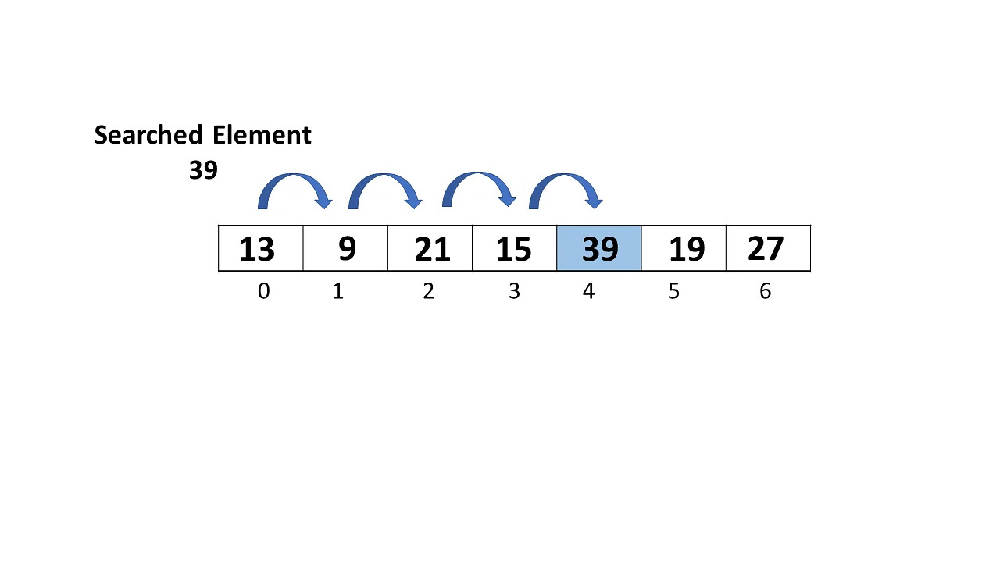
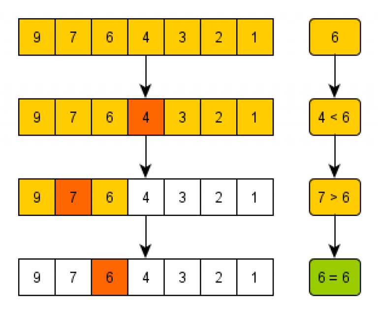

Searching and Sorting
Time Complexity
Before we get into searching and sorting algorithms, we first need to talk about time complexity, which is a measure of how quickly an algorithm runs compared to the size of its input. Time complexity is represented in Big O notation. It takes the form O(n), with O() representing an idea of how complex the algorithm is depending on the input and n representing the size of the input. For example, an algorithm that runs a set amount of calculation regardless of the size of it input would have a time complexity of O(1), an algorithm that runs n calculations when given an input of size n would have a time complexity of O(n) (e.g. asking every student in your class if they have a pencil, with n being the size of the class), and an algorithm that runs n2 calculations when given an input of size n would have a time complexity of O(n2) (e.g. asking each student in your class if they have a pencil, but also asking them one by one if any of the other n-1 students in the class have the pencil).
Sorting
Searching algorithms can detect if an element is in a data structure and retrieve it from where it is stored. There are 2 main types of searching algorithms: sequential search and binary search.
Sequential Search
A sequential search algorithm scans through each element in a data structure and compares it to the target value.  Shown below is an example of a sequential search algorithm, which loops through each element in an int array and compares it to a target value. Since it loops through every element in the array, the average time complexity would be n/2, and the worst case time complexity would be n (if the target element is at the end of the array). Since n comparisons would also need to be done before knowing that the target element is not in the array, the time complexity of this algorithm would be O(n).
public int sequentialSearch(int[] arr, int target) {
for (int i = 0; i < arr.length; i++) {
if (target == arr[i]) {
return i;
}
}
return -1;
}Binary Search
Binary search algorithms are another type of searching algorithm which work by repeatedly dividing the data structure in half and comparing the middle element to the target value. However, they only work if the array being searched is sorted either in ascending or descending order.
If the middle element is equal to the target value, the search is successful and the index of the middle element is returned. If the middle element is greater than the target value, the search continues on the left half of the data structure, and if the middle element is less than the target value, the search continues on the right half of the data strucure (assuming it is sorted in descending order). This process repeats until the target value is found or it is determined that the target value is not in the data structure. If the data structure is sorted in ascending order, then the sides being searched are flipped - with the search continuing on the right half of the data structure if the middle value is greater than the target value, and vice versa. As a result of this binary splitting action, the time complexity of binary search O(log n). This means that it is much faster than insertion sort when sorting through large, sorted arrays. For example, For example, for a sorted array with 1 million elements, sequential search would take an average of 500,000 comparisons to find the target value, while binary search would take at most 20 comparisons. Shown below is an example of a binary search algorithm, which searches for a target value in an array of ints.
public static int binarySearch(int[] arr, int target) {
int left = 0;
int right = arr.length-1;
while (left <= right) {
int mid = (left+right)/2;
if (arr[mid] == target) return mid;
else if (arr[mid] < target) left = mid+1;
else right = mid-1;
}
return -1;
}
This code returns the index of the target value if the target value is in the array, and returns -1 if it is not. It uses 2 variables - left
and right to store the indices of the leftmost and rightmost elements of the subarray being sorted. With each iteration of the while loop, mid is
set to the index of the middle value in the array. The middle value is the compared to the target value, and left and right are then changed
depending on which side of the array is then searched. Setting left to mid+1 searches the right side of the array when the middle value is
smaller than target, and setting right to mid-1 searches the left side of the array when the middle value is larger than target.
Sorting Algorithms
Sorting algorithms can be used to sort the elements in a data structure in ascending or descending order. Some potential uses of sorting algorithms
could be to:
- Sort bank cheques by account number
- Order an array of test scores from highest to lowest
- Sort transactions on a credit card by date
Selection Sort
Selection sort is a sorting algorithm which splits the data structure into 2 portions, a sorted portion and an unsorted portion. It then loops through the unsorted array, finding the largest (or smallest) element in the unsorted portion (which is the entire array in th beginning) and moving it to the correct position to the sorted portion. It is simple algorithm but has a time complexity of O(n2), making it inefficient to use on large data structures. Shown below is an example of a selection sort method.
public void sort(int arr[]) {
for (int i = 0; i < arr.length-1; i++) {
int min_idx = i;
for (int j = i+1; j < arr.length; j++) {
if (arr[j] < arr[min_idx]) {
min_idx = j;
}
}
int temp = arr[min_idx];
arr[min_idx] = arr[i];
arr[i] = temp;
}
}Quicksort
Quicksort works on the basis of divide and conquer, splitting a data structure in half over and over again into substructures and partially sorting each half. It makes use of a pivot, an element in the data structure which the 2 halves of the data structure are split around. With every pass through each substructure, the value of the pivot is compared to each element in the substructure and placed at the correct position, with every element less than the pivot moved to the right of the pivot element and every element greater than the pivot moved to the left of the pivot. As a result of this binary splitting action, it is faster than selection sort, with an average time complexity of O(n log n). Shown below is an example of a quicksort method. The partition method locates the pivot and puts it in the right place relative to all the other elements in the substructure, the swap method swaps 2 elements, and the quicksortHelper method recursively quicksorts each substructure around the pivot.
public static void quicksort(int[] arr) {
quicksortHelper(arr, 0, arr.length - 1);
}
public static void quicksortHelper(int[] arr, int left, int right) {
if (left < right) {
int pivotIndex = partition(arr, left, right);
quicksortHelper(arr, left, pivotIndex - 1);
quicksortHelper(arr, pivotIndex + 1, right);
}
}
public static int partition(int[] arr, int left, int right) {
int pivotIndex = (left + right) / 2; // Sets pivotIndex to the middle value in the array
swap(arr, pivotIndex, right);
int storeIndex = left;
for (int i = left; i < right; i++) {
if (arr[i] < arr[pivotIndex]) {
swap(arr, i, storeIndex);
storeIndex++;
}
}
swap(arr, storeIndex, right);
return storeIndex;
}
public static void swap(int[] arr, int i, int j) {
int temp = arr[i];
arr[i] = arr[j];
arr[j] = temp;
}